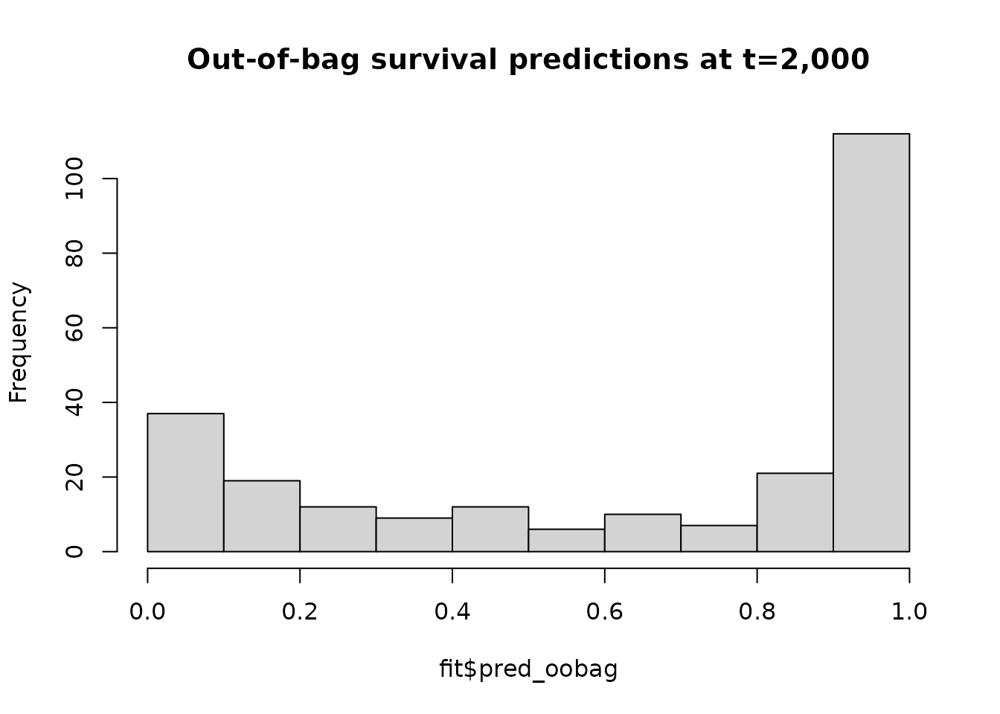

Out-of-bag data
In random forests, each tree is grown with a bootstrapped version of the training set. Because bootstrap samples are selected with replacement, each bootstrapped training set contains about two-thirds of instances in the original training set. The ‘out-of-bag’ data are instances that are not in the bootstrapped training set.
Out-of-bag predictions and error
Each tree in the random forest can make predictions for its out-of-bag data, and the out-of-bag predictions can be aggregated to make an ensemble out-of-bag prediction. Since the out-of-bag data are not used to grow the tree, the accuracy of the ensemble out-of-bag predictions approximate the generalization error of the random forest. Out-of-bag prediction error plays a central role for some routines that estimate variable importance, e.g. negation importance.
Let’s fit an oblique random survival forest and plot the distribution of the ensemble out-of-bag predictions.
fit <- orsf(data_train = pbc_orsf,
formula = Surv(time, status) ~ . - id,
oobag_time = 3500)
hist(fit$surv_oobag,
main = 'Ensemble out-of-bag survival predictions at t=3,500')
Not surprisingly, all of the survival predictions are between 0 and 1. Next, let’s check the out-of-bag accuracy of fit:
# what function is used to evaluate out-of-bag predictions?
fit$eval_oobag$stat_type
#> [1] "Harrell's C-statistic"
# what is the output from this function?
fit$eval_oobag$stat_values
#> [,1]
#> [1,] 0.8405918The out-of-bag estimate of Harrell’s C-statistic (the default method to evaluate out-of-bag predictions) is 0.8405918.
Monitoring out-of-bag error
As each out-of-bag data set contains about one-third of the training set, the out-of-bag error estimate usually converges to a stable value as more trees are added to the forest. If you want to monitor the convergence of out-of-bag error for your own oblique random survival forest, you can set oobag_eval_every to compute out-of-bag error at every oobag_eval_every tree. For example, let’s compute out-of-bag error after fitting each tree in a forest of 50 trees:
fit <- orsf(data_train = pbc_orsf,
formula = Surv(time, status) ~ . - id,
n_tree = 50,
oobag_time = 3500,
oobag_eval_every = 1)
plot(
x = seq(1, 50, by = 1),
y = fit$eval_oobag$stat_values,
main = 'Out-of-bag C-statistic computed after each new tree is grown.',
xlab = 'Number of trees grown',
ylab = fit$eval_oobag$stat_type
)In general, at least 500 trees are recommended for a random forest fit. We’re just using 50 in this case for better illustration of the out-of-bag error curve. Also, it helps to make run-times low whenever I need to re-compile the package vignettes.
User-supplied out-of-bag evaluation functions
In some cases, you may want to use your own function to compute out-of-bag error. For example, here is a simple (and incorrect) way to compute the Brier score. (It is incorrect because it does not account for censoring)
oobag_fun_brier <- function(y_mat, s_vec){
# risk = 1 - survival
r_vec <- 1 - s_vec
# mean of the squared differences between predicted and observed risk
mean( (y_mat[, 'status'] - r_vec)^2 )
}There are two ways to apply your own function to compute out-of-bag error. First, you can apply your function to the out-of-bag survival predictions that are stored in ‘aorsf’ objects, e.g:
oobag_fun_brier(y_mat = fit$data_train[, c('time', 'status')],
s_vec = fit$surv_oobag)
#> [1] 0.1811263Second, you can pass your function into orsf(), and it will be used in place of Harrell’s C-statistic:
fit <- orsf(data_train = pbc_orsf,
formula = Surv(time, status) ~ . - id,
n_tree = 50,
oobag_time = 3500,
oobag_fun = oobag_fun_brier,
oobag_eval_every = 1)
plot(
x = seq(1, 50, by = 1),
y = fit$eval_oobag$stat_values,
main = 'Out-of-bag error computed after each new tree is grown.',
sub = 'For the Brier score, lower values indicate more accurate predictions',
xlab = 'Number of trees grown',
ylab = "Brier score"
)Let’s run one more example showing how this can be done using functions from other packages, e.g., survivalROC from the survivalROC package:
oobag_fun_sroc <- function(y_mat, s_vec){
score <- survivalROC::survivalROC(
Stime = y_mat[, 'time'],
status = y_mat[, 'status'],
# risk = 1 - survival
marker = 1 - s_vec,
# important!! Make sure this matches the time you used in orsf
predict.time = 3500,
# nearest neighbor estimation for censoring
method = "NNE",
# value taken from ?survivalROC examples
span = 0.25 * nrow(y_mat)^(-0.20)
)
# oobag_fun needs to return a numeric value of length 1
score$AUC
}
fit <- orsf(data_train = pbc_orsf,
formula = Surv(time, status) ~ . - id,
n_tree = 50,
oobag_time = 3500,
oobag_fun = oobag_fun_sroc,
oobag_eval_every = 1)
plot(
x = seq(50),
y = fit$eval_oobag$stat_values,
main = 'Out-of-bag time-dependent AUC\ncomputed after each new tree is grown.',
xlab = 'Number of trees grown',
ylab = "AUC at t = 3,500"
)Specific instructions on user-supplied functions
User-supplied functions must:
- have exactly two arguments named
y_matands_vec. - return a numeric output of length 1
If either of these conditions is not true, an error will occur. A simple test to make sure your user-supplied function will work with the aorsf package is below:
# Helper code to make sure your oobag_fun function will work with aorsf
# time and status values
test_time <- seq(from = 1, to = 5, length.out = 100)
test_status <- rep(c(0,1), each = 50)
# y-matrix is presumed to contain time and status (with column names)
y_mat <- cbind(time = test_time, status = test_status)
# s_vec is presumed to be a vector of survival probabilities
s_vec <- seq(0.9, 0.1, length.out = 100)
# see 1 in the checklist above
names(formals(oobag_fun_sroc)) == c("y_mat", "s_vec")
#> [1] TRUE TRUE
test_output <- oobag_fun_sroc(y_mat = y_mat, s_vec = s_vec)
# test output should be numeric
is.numeric(test_output)
#> [1] TRUE
# test_output should be a numeric value of length 1
length(test_output) == 1
#> [1] TRUEUser-supplied functions for negation importance.
Negation importance is based on the out-of-bag error, so of course you may be curious about what negation importance would be if it were computed using different statistics. The workflow for doing this is exactly the same as the example above, except we have to specify importance = TRUE when we fit our model. Also, to speed up computations, I am not going to monitor out-of-bag error here.
fit_sroc <- orsf(data_train = pbc_orsf,
formula = Surv(time, status) ~ . - id,
n_tree = 50,
oobag_time = 3500,
oobag_fun = oobag_fun_sroc,
importance = TRUE)
fit_sroc$importance
#> bili chol spiders_1 platelet albumin
#> 0.0474857502 0.0202847360 0.0179360543 0.0169520742 0.0161469124
#> copper ast ascites_1 stage hepato_1
#> 0.0144927563 0.0108466634 0.0108241290 0.0097283632 0.0093954997
#> edema_1 trt_placebo protime edema_0.5 alk.phos
#> 0.0036360628 0.0026372780 0.0014476052 0.0001748812 -0.0030156140
#> sex_f trig age
#> -0.0083727792 -0.0100499576 -0.0130381372Multiple functions for negation importance
If you’d like to compute several types of negation importance for the same model, that can be done using orsf_vi_negate(), which allows you to specify an out-of-bag function just as orsf() does:
fit <- orsf(data_train = pbc_orsf,
formula = Surv(time, status) ~ . - id,
n_tree = 500,
oobag_time = 3500)
# use default technique (harrell's C-statistic)
orsf_vi_negate(fit)
#> bili age protime ascites copper
#> 1.635757e-02 1.130444e-02 7.605751e-03 7.501563e-03 6.563867e-03
#> stage spiders edema sex albumin
#> 4.948948e-03 3.802876e-03 2.695254e-03 2.240050e-03 1.250260e-03
#> hepato chol alk.phos trt trig
#> 5.209419e-05 -4.167535e-04 -1.093978e-03 -1.458637e-03 -1.510731e-03
#> platelet
#> -2.500521e-03
# use C-statistic from survivalROC
orsf_vi_negate(fit, oobag_fun = oobag_fun_sroc)
#> albumin bili stage platelet sex
#> 0.0191074198 0.0133841492 0.0093453965 0.0082944821 0.0045909287
#> edema hepato alk.phos age chol
#> 0.0042033023 0.0035199907 0.0017165921 0.0007178081 -0.0006177572
#> ast protime ascites trig spiders
#> -0.0020624198 -0.0025549525 -0.0038144975 -0.0060525537 -0.0083596481
#> copper trt
#> -0.0141543299 -0.0306004160There are some discrepancies between methods in the ranking of important variables. A simulation study to determine which method of estimating out-of-bag error does a better job of discriminating between important and unimportant variables would be helpful.
I really need to use
You can use any package whatsoever to evaluate out-of-bag predictions. You can access the final out-of-bag survival predictions from an aorsf model like so:
surv_oobag <- fit$surv_oobag
surv_oobag[1:5, ]
#> [1] 0.02389732 0.38609899 0.19229857 0.26090199 0.29198062Some notes to remember when evaluating out-of-bag error with surv_oobag:
the
oobag_timeinput inorsf()determines the prediction horizon for out-of-bag predictions. The prediction horizon is a critical input for evaluation of predictions with time-to-event outcomes.Some functions expect predicted risk (i.e., 1 - predicted survival), others expect predicted survival.
In most cases, you should also be able to use any package whatsoever to compute negation importance. One exception at this point is riskRegression. I have experimented with riskRegression but found its functions do not work as I would expect them to when I try to run them from C++. I think this may be due to riskRegression’s internal use of data.table and modification by reference, but I do not have certainty on that yet.